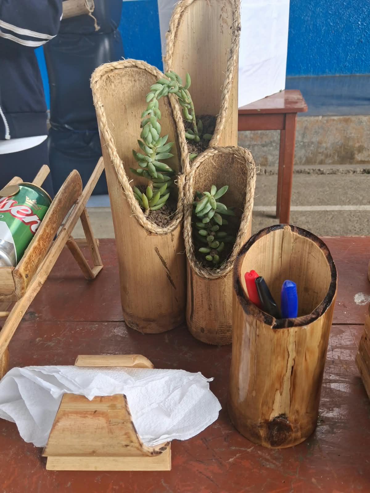
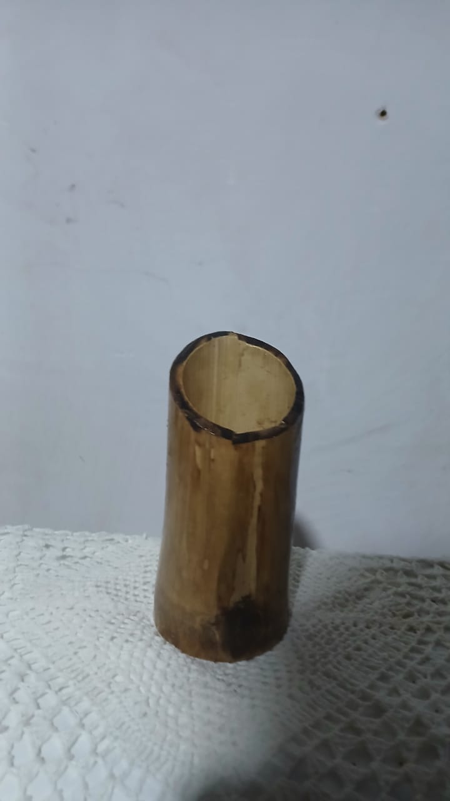
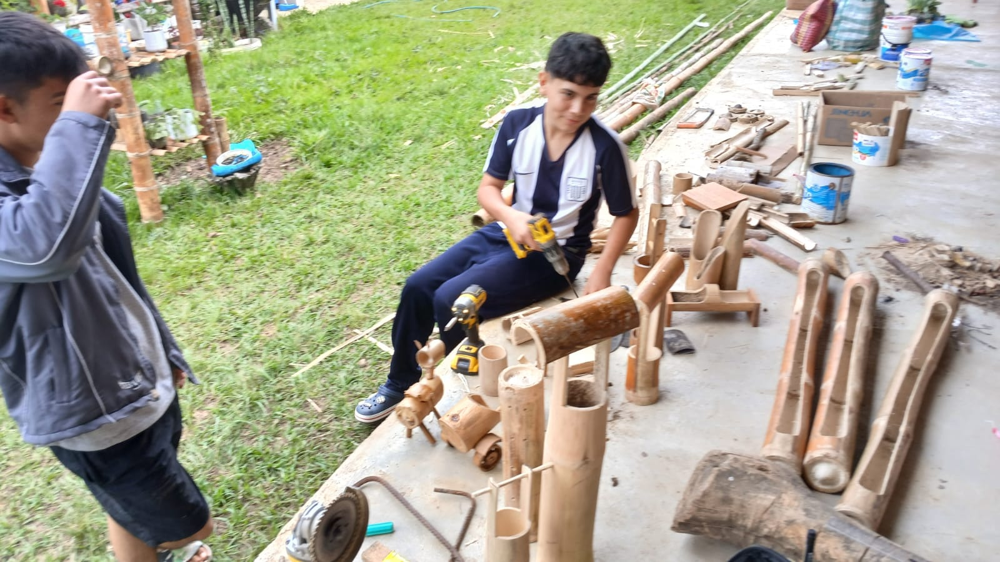
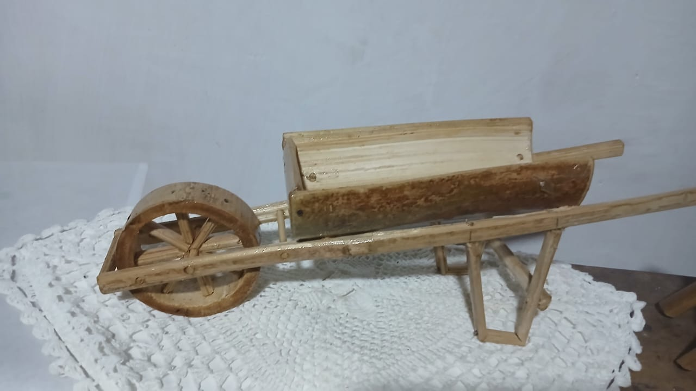
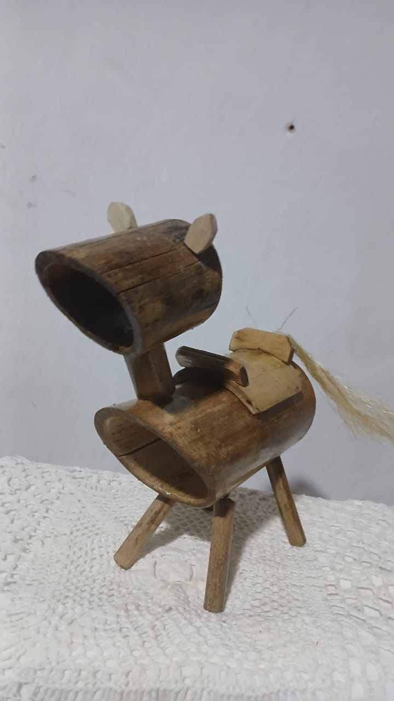
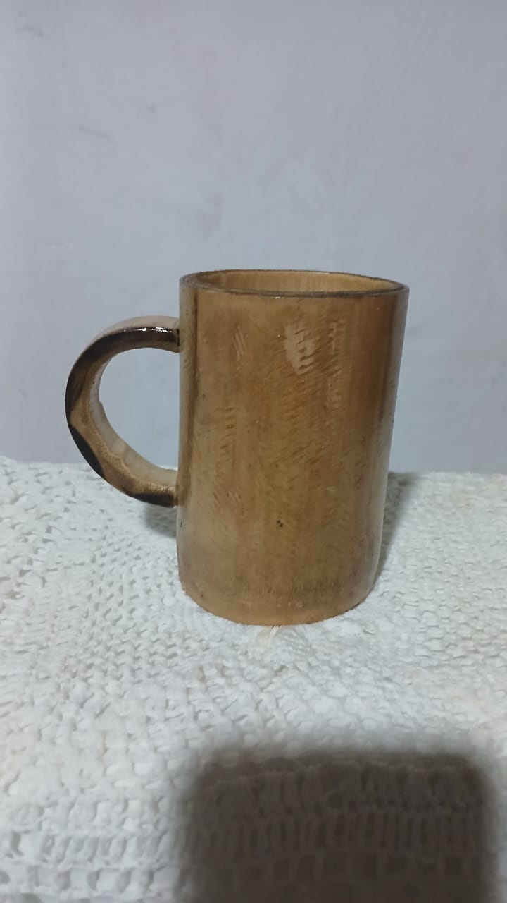
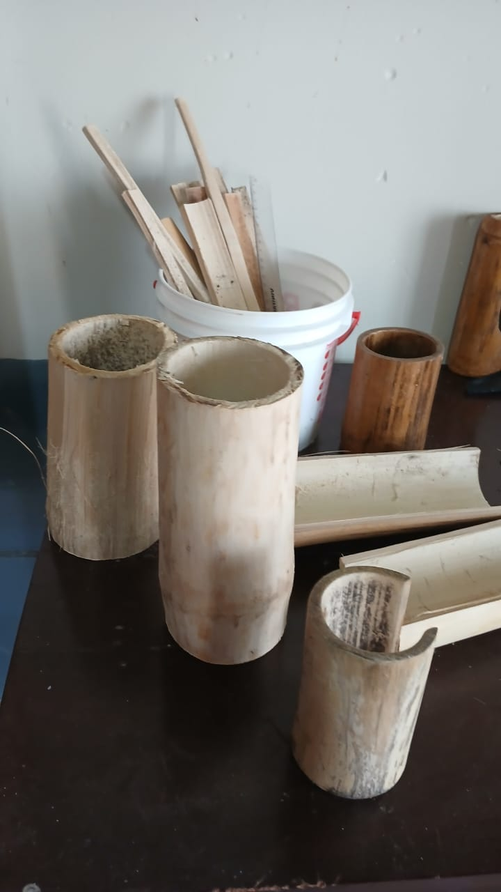

01 · MACETEROS
Macetero ecológico
Para plantas suculentas o colgantes.
COLASAY · JAÉN · CAJAMARCA
Artesanías que nacen de nuestra tierra.
Transformamos Bambú Guayaquil local en productos decorativos y organizadores funcionales, con identidad de Colasay y enfoque sostenible.
NUESTRA PROPUESTA
En Colasay existe Bambú Guayaquil que puede convertirse en productos útiles, decorativos y con valor agregado. ECOBAMBÚ propone aprovechar responsablemente este recurso para crear una alternativa artesanal frente a productos sintéticos.
COLECCIÓN ECOBAMBÚ
Una línea de artesanías decorativas y organizadores elaborados con Bambú Guayaquil.

Para plantas suculentas o colgantes.

Organización práctica para útiles.

Soporte y transporte decorativo.

Pieza curva sobre una base estable.

Decoración y exhibición artesanal.
Contenedor ornamental con sistema colgante.

Para guardar accesorios con comodidad.

Para flores secas o artificiales.
Centro de mesa y organización.
Para plantas pequeñas y espacios especiales.
EL PROYECTO
El proyecto identifica el uso frecuente de objetos plásticos sintéticos y el escaso aprovechamiento comercial del bambú Guayaquil local. ECOBAMBÚ plantea convertir esta materia prima en una línea de productos con utilidad, estética natural, resistencia e identidad local.
Crear productos funcionales, seguros, resistentes, atractivos y accesibles que respondan a necesidades reales de las personas de Colasay.
DEL BAMBÚ AL PRODUCTO
Cada pieza pasa por etapas de preparación, elaboración, acabado y comprobación.
VALIDACIÓN
El proyecto documenta pruebas de humedad, equilibrio/carga y seguridad de bordes para mejorar los prototipos.
Riegos diarios en maceteros.
Pruebas de carga en porta botellas.
Reportó superficies suaves y sin bordes cortantes en la inspección documentada.
EQUIPO EMPRENDEDOR
Roles organizados para desarrollar producción, diseño, marketing y evaluación.
Coordinación y producción
Diseño y prototipado
Producción y seguridad
Marketing y ventas
Costos y evaluación
ECOBAMBÚ · COLASAY
Artesanías con identidad local y enfoque sostenible.
Explorar colección ↗